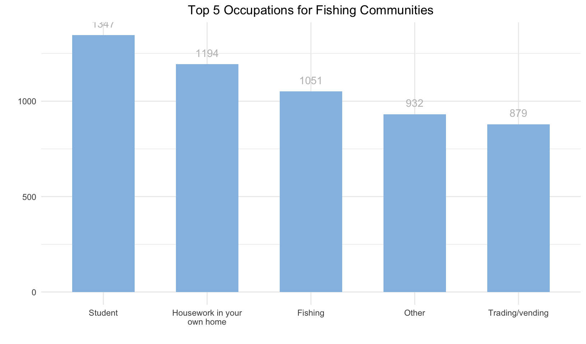
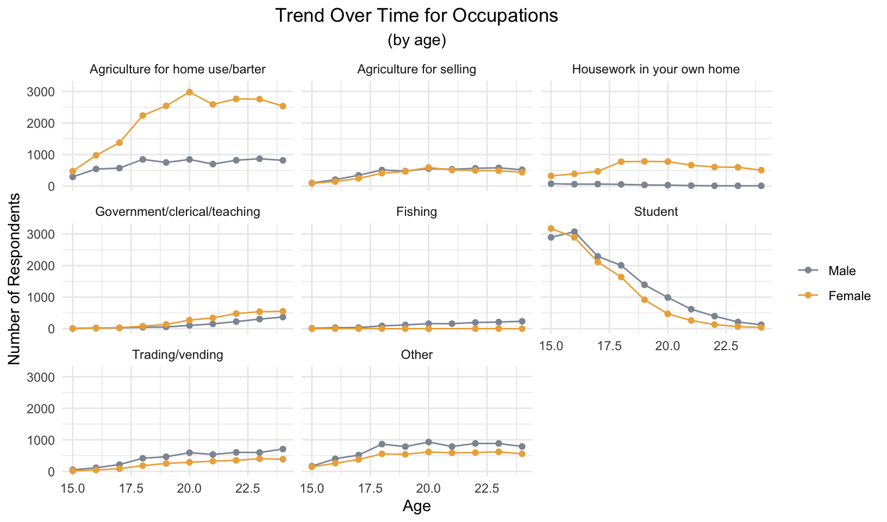

Last updated: 2021-08-09
Checks: 6 1
Knit directory: rakai_occupation_trend/
This reproducible R Markdown analysis was created with workflowr (version 1.6.2). The Checks tab describes the reproducibility checks that were applied when the results were created. The Past versions tab lists the development history.
Great! Since the R Markdown file has been committed to the Git repository, you know the exact version of the code that produced these results.
Great job! The global environment was empty. Objects defined in the global environment can affect the analysis in your R Markdown file in unknown ways. For reproduciblity it’s best to always run the code in an empty environment.
The command set.seed(20210726) was run prior to running the code in the R Markdown file. Setting a seed ensures that any results that rely on randomness, e.g. subsampling or permutations, are reproducible.
Great job! Recording the operating system, R version, and package versions is critical for reproducibility.
Nice! There were no cached chunks for this analysis, so you can be confident that you successfully produced the results during this run.
Using absolute paths to the files within your workflowr project makes it difficult for you and others to run your code on a different machine. Change the absolute path(s) below to the suggested relative path(s) to make your code more reproducible.
| absolute | relative |
|---|---|
| /Users/tianyi/Desktop/CUMC/Practicum/rakai_occupation_trend/data | data |
Great! You are using Git for version control. Tracking code development and connecting the code version to the results is critical for reproducibility.
The results in this page were generated with repository version c32fddb. See the Past versions tab to see a history of the changes made to the R Markdown and HTML files.
Note that you need to be careful to ensure that all relevant files for the analysis have been committed to Git prior to generating the results (you can use wflow_publish or wflow_git_commit). workflowr only checks the R Markdown file, but you know if there are other scripts or data files that it depends on. Below is the status of the Git repository when the results were generated:
Ignored files:
Ignored: .Rhistory
Ignored: Literature/
Ignored: Logistic/
Ignored: Survey/
Ignored: Training/
Ignored: analysis/.Rhistory
Ignored: data/.DS_Store
Ignored: data/Fishing Villages
Ignored: data/PCA_weights.xlsx
Ignored: data/R1_R18_partcleaned_incidence_20190913.dta
Ignored: data/R1_R18_risk_behaviors.dta
Ignored: data/RYP codebook_2014_Updated_2019Mar12.xlsx
Ignored: data/Rural and Peri-urban Communities
Ignored: data/SES_cutpoints.xlsx
Ignored: data/all_data_original_id_1_19.dta
Ignored: data/all_data_unique_id_1_19.dta
Ignored: data/proposed_variables.csv
Ignored: data/training.dta
Untracked files:
Untracked: .DS_Store
Untracked: analysis/.DS_Store
Note that any generated files, e.g. HTML, png, CSS, etc., are not included in this status report because it is ok for generated content to have uncommitted changes.
These are the previous versions of the repository in which changes were made to the R Markdown (analysis/rakai_occupational_trend_20210713.Rmd) and HTML (docs/rakai_occupational_trend_20210713.html) files. If you’ve configured a remote Git repository (see ?wflow_git_remote), click on the hyperlinks in the table below to view the files as they were in that past version.
| File | Version | Author | Date | Message |
|---|---|---|---|---|
| Rmd | c32fddb | Amanda | 2021-08-09 | wflow_git_commit("rakai_occupational_trend_20210713.Rmd") |
| html | 32f5fe7 | Amanda | 2021-07-29 | Build site. |
| Rmd | 8b92473 | Amanda | 2021-07-29 | wflow_publish("rakai_occupational_trend_20210713.Rmd") |
| html | 75ecdd8 | Amanda | 2021-07-29 | Build site. |
| Rmd | e17d445 | Amanda | 2021-07-29 | wflow_publish("rakai_occupational_trend_20210713.Rmd") |
| html | cc15fa1 | Amanda | 2021-07-26 | Build site. |
| Rmd | f0ff5e4 | Amanda | 2021-07-26 | wflow_publish(c("analysis/rakai_occupational_trend_20210713.Rmd")) |
| html | c0e580c | Amanda | 2021-07-26 | Build site. |
| Rmd | 14fc0e2 | Amanda | 2021-07-26 | wflow_publish("analysis/rakai_occupational_trend_20210713.Rmd") |
| Rmd | f566ea4 | Amanda | 2021-07-26 | 20210726-initial-commit |
library(tidyverse)
library(haven)
library(ggplot2)
library(scales)
library(knitr)
library(kableExtra)
library(knitr)
library(magrittr)
library(epitools)setwd("/Users/tianyi/Desktop/CUMC/Practicum/rakai_occupation_trend/data")
dat <- read_dta("all_data_original_id_1_19.dta")
dat_part_cleaned <- read_dta("R1_R18_partcleaned_incidence_20190913.dta")
colors <- c("#8d96a3", "#edae49", "#94bee3", "#5ec0b2", "#9fc96c", "#5ec0b2")Only rows from the all_data_original_id_1_19.dta dataset will be included in the full dataset.
# `hivrslt`: 1 2 3 7 8 9
hivrslt_dat <-
dat_part_cleaned %>%
select(study_id, round, hivrslt) %>%
drop_na(hivrslt)
comm_num_dat <-
dat_part_cleaned %>%
select(study_id, round, comm_num) %>%
drop_na(comm_num)
# .y: dat_part_cleaned
# If conflict in data, use data from "all_data_original_id_1_19.dta"
dat_all <-
dat %>%
left_join(hivrslt_dat, by = c("study_id" = "study_id", "round" = "round")) %>%
mutate(hivrslt = ifelse(is.na(hivrslt.x), hivrslt.y, hivrslt.x)) %>%
select(-hivrslt.x, -hivrslt.y)
dat_all <-
dat_all %>%
left_join(comm_num_dat, by = c("study_id" = "study_id", "round" = "round")) %>%
mutate(comm_num = ifelse(is.na(comm_num.x), comm_num.y, comm_num.x)) %>%
select(-comm_num.x, -comm_num.y)
dat_all %>% relocate(study_id) %>% group_by(study_id)# A tibble: 105,060 x 90
# Groups: study_id [51,620]
study_id round radio bicycle motorcyc car roof floor walls electric
<chr> <chr> <dbl> <dbl> <dbl> <dbl> <dbl> <dbl> <dbl> <dbl>
1 A000001 R002 1 1 2 2 1 1 2 2
2 A000001 R005 2 1 2 2 1 1 3 2
3 A000001 R006 1 1 2 2 1 1 3 2
4 A000001 R008 1 1 2 2 1 3 3 2
5 A000035 R001 1 1 2 2 1 3 2 2
6 A000035 R002 2 1 2 2 1 3 2 2
7 A000051 R001 2 2 2 2 1 1 3 2
8 A000077 R001 2 2 2 2 1 1 2 2
9 A000077 R002 2 2 2 2 1 1 2 2
10 A000077 R003 2 2 2 2 1 1 2 2
# … with 105,050 more rows, and 80 more variables: latrine <dbl>,
# othfloor <chr>, ageyrs <dbl>, evermarr <dbl+lbl>, currmarr <dbl+lbl>,
# occup1 <dbl>, occup2 <dbl>, eversex <dbl>, pregnow <dbl+lbl>,
# everpreg <dbl+lbl>, fpusing1 <dbl>, fpusing2 <dbl>, fpusing3 <dbl>,
# fpusing4 <dbl>, fpusing5 <dbl>, fpusing6 <dbl>, fpusing7 <dbl>,
# fpusing8 <dbl>, fpusing9 <dbl>, polymar <dbl>, sexyear <dbl>,
# sexp1yr <dbl>, livechild <dbl>, occs <chr>, occup11 <dbl>, occup21 <dbl>,
# othfp <chr>, alclstmo <chr>, sexp1out <dbl>, sexpsxm <dbl>,
# pabuseyr <dbl+lbl>, ppushyr <dbl+lbl>, pfistyr <dbl+lbl>,
# pkickyr <dbl+lbl>, pweapyr <dbl+lbl>, patknyr <dbl+lbl>,
# vthrsxpy <dbl+lbl>, othfsxpy <dbl+lbl>, pfocsxpy <dbl+lbl>, occups1 <chr>,
# conf_age <dbl>, dissed12m <chr>, disins12m <chr>, forcsxtn <chr>,
# heardarv <chr>, numbirth <dbl>, fpusng10 <dbl>, fpusng11 <dbl>,
# fpusng12 <dbl>, numchild <dbl>, occupat11 <chr>, occupat1 <chr>,
# occupat2 <chr>, smoke <dbl>, circhusb <dbl>, occupat21 <chr>,
# sexp1yrb <chr>, educate <dbl+lbl>, educyrs <dbl>, ag1stsex <dbl>,
# numpreg <chr>, evermend <dbl+lbl>, pothvyr <dbl+lbl>, school <dbl+lbl>,
# finsch <dbl+lbl>, pregsch <dbl+lbl>, movesch <dbl+lbl>, menasch <dbl+lbl>,
# harasch <dbl+lbl>, bullwsch <dbl+lbl>, paresch <dbl+lbl>,
# accomsch <dbl+lbl>, othsch <dbl+lbl>, spesch <chr>, addtrain <dbl>,
# othpvyrs <chr>, female <dbl+lbl>, conf_age_flow <dbl>, hivrslt <dbl>,
# comm_num <dbl>Check if all requested variables exist
vars <- c("occup1", "occup2", "occupat1", "occupat2", "occs", # outcome
"female", "ageyrs", "conf_age", "conf_age_flow", # demographics
"comm_num",
"radio", "bicycle","car","motorcyc","latrine", # SES
"electric", "floor", "othfloor", "roof", "walls",
"everpreg", "pregnow", "livechild", "numchild", # pregnancy
"evermarr", "currmarr", "polymar", "evermend", # marriage
"pabuseyr", "ppushyr", "pfistyr", "pkickyr", # domestic violence
"pweapyr", "patknyr", "pothvyr",
"vthrsxpy", "pfocsxpy", "othfsxpy", "othpvyrs",# violence
"hivrslt",# hiv result
"occupat11", "occupat21", "occup11", "occup21", "occups1", # partner occupation
"educate", "educyrs", "school", "finsch", "pregsch", # education
"movesch", "menasch", "harasch", "bullwsch", "paresch",
"accomsch", "othsch", "spesch", "addtrain")
dat_all %>% select(all_of(vars))# A tibble: 105,060 x 59
occup1 occup2 occupat1 occupat2 occs female ageyrs conf_age conf_age_flow
<dbl> <dbl> <chr> <chr> <chr> <dbl+l> <dbl> <dbl> <dbl>
1 6 1 "" "" "NULL" 1 [Fem… 16 NA 16
2 6 1 "" "" "NULL" 1 [Fem… 18 NA 18
3 8 3 "NULL" "NULL" "STUDE… 1 [Fem… 20 NA 20
4 1 3 "" "" "" 1 [Fem… 22 NA 22
5 8 3 "" "" "STUDE… 0 [Mal… 15 NA 15
6 8 3 "" "" "NULL" 0 [Mal… 16 NA 16
7 10 1 "" "" "SHOP … 0 [Mal… 17 NA 17
8 10 1 "" "" "SHOP … 1 [Fem… 23 NA 23
9 10 1 "" "" "NULL" 1 [Fem… 23 NA 23
10 10 1 "" "" "NULL" 1 [Fem… 20 NA 20
# … with 105,050 more rows, and 50 more variables: comm_num <dbl>, radio <dbl>,
# bicycle <dbl>, car <dbl>, motorcyc <dbl>, latrine <dbl>, electric <dbl>,
# floor <dbl>, othfloor <chr>, roof <dbl>, walls <dbl>, everpreg <dbl+lbl>,
# pregnow <dbl+lbl>, livechild <dbl>, numchild <dbl>, evermarr <dbl+lbl>,
# currmarr <dbl+lbl>, polymar <dbl>, evermend <dbl+lbl>, pabuseyr <dbl+lbl>,
# ppushyr <dbl+lbl>, pfistyr <dbl+lbl>, pkickyr <dbl+lbl>, pweapyr <dbl+lbl>,
# patknyr <dbl+lbl>, pothvyr <dbl+lbl>, vthrsxpy <dbl+lbl>,
# pfocsxpy <dbl+lbl>, othfsxpy <dbl+lbl>, othpvyrs <chr>, hivrslt <dbl>,
# occupat11 <chr>, occupat21 <chr>, occup11 <dbl>, occup21 <dbl>,
# occups1 <chr>, educate <dbl+lbl>, educyrs <dbl>, school <dbl+lbl>,
# finsch <dbl+lbl>, pregsch <dbl+lbl>, movesch <dbl+lbl>, menasch <dbl+lbl>,
# harasch <dbl+lbl>, bullwsch <dbl+lbl>, paresch <dbl+lbl>,
# accomsch <dbl+lbl>, othsch <dbl+lbl>, spesch <chr>, addtrain <dbl># "occupat1", "occupat2", "occs",
# "conf_age", "conf_age_flow", visit
# "livechild", "numchild",
# "othpvyrs", "hivrslt",
# "occup11", "occup21", "occups1",
# "addtrain"age variable by merging information from conf_age_flow, conf_age, ageyrs# Prioritization: `conf_age_flow` -> `conf_age` -> `ageyrs`
dat_all <-
dat_all %>%
mutate(age = ifelse(is.na(conf_age_flow), conf_age, conf_age_flow)) %>%
mutate(age = ifelse(is.na(age), ageyrs, age))age groups variable (15-17, 18-19, 20-24)dat_all <-
dat_all %>%
filter(15 <= age & age <= 24) %>%
mutate(age_cat = cut(age, breaks = c(14.5, 17.5, 19.5, 24.5), labels = c(1, 2, 3))) %>%
mutate(age_cat = labelled(age_cat, c("15-17" = 1, "18-19" = 2, "20-24" = 3)))visit variabledat_all <-
dat_all %>%
mutate(visit = str_sub(round, 2, -1)) %>%
mutate(visit = as.numeric(visit))time period variable (R1-R9 and R10-R19)dat_all <-
dat_all %>%
mutate(period = cut(visit, breaks = c(0.5, 9.5, 19.5), labels = c(1, 2))) %>%
mutate(period = labelled(period, c("R1-R9" = 1, "R10-R19" = 2)))area variablecomm_fishing <- c(23, 38, 370, 770, 771, 772, 773, 774, 51, 776)
area_fishing <- rep("fishing", length(comm_fishing))
comm_rural <- c(3, 6, 7, 8, 10, 11, 12, 13, 14, 15, 16, 17, 18, 19, 20, 21, 25, 27, 28, 29, 30, 31, 32, 33, 34, 35, 36, 44, 52, 53, 54, 55, 56, 57, 58, 59, 60, 61, 62, 65, 67, 68, 77, 81, 84, 89, 94, 95, 103, 106, 107, 108, 109, 120, 177, 183, 256, 391, 401, 451, 468, 602, 755, 760, 900, 901)
area_rural <- rep("rural", length(comm_rural))
comm_periurban <- c(1, 2, 4, 5, 9, 22, 24, 26, 40, 45, 46, 74, 754)
area_periurban <- rep("periurban", length(comm_periurban))
area <- data.frame("comm_num" = c(comm_fishing, comm_rural, comm_periurban),
"area" = c(area_fishing, area_rural, area_periurban))
dat_all <-
dat_all %>%
left_join(area)# labelling occupations
occup_lab <- c("Agriculture for home use/barter" = 1,
"Agriculture for selling" = 2,
"Housework in your own home" = 3,
"Housekeeper (for relative or employer)" = 4,
"Home brewing" = 5,
"Government/clerical/teaching" = 6,
"Fishing" = 7,
"Student" = 8,
"Military/police" = 9,
"Shopkeeper" = 10,
"Trading/vending" = 11,
"Bar worker or owner" = 12,
"Trucker" = 13,
"Unemployed" = 14,
"Other" = 15,
"No additional occupation" = 88,
"Medical worker (non-government)" = 16,
"Casual laborer" = 17,
"Waitress/Waiter/restaurant owner" = 18,
"Hair dresser/Salon owner" = 19,
"Construction (brick maker, builder, porter, painter, roofing)" = 20,
"Mechanic (automobiles, bicycles, electronics)" = 21,
"Boda Boda" = 22,
"Client/Sex worker" = 23,
"Sports betting, Gambling machine, Ludo" = 24,
"Don't know" = 97,
"Don't know" = 98,
"No response" = 99)
dat_all$occup1 <- dat_all$occup1 %>% labelled(occup_lab)
dat_all$occup2 <- dat_all$occup2 %>% labelled(occup_lab)
# categorize occupation
occup1_cat <- dat_part_cleaned %>% select(occup1, occup1_cat) %>% unique() %>% arrange(occup1) %>% drop_na(occup1)
occup2_cat <- occup1_cat %>% rename(occup2 = occup1, occup2_cat = occup1_cat)
occup1_mob <- dat_part_cleaned %>% select(occup1, occup1_mob) %>% unique() %>% arrange(occup1) %>% drop_na(occup1)
occup2_mob <- occup1_mob %>% rename(occup2 = occup1, occup2_mob = occup1_mob)
dat_all <-
dat_all %>%
left_join(occup1_cat, by = ("occup1" = "occup1")) %>%
left_join(occup1_mob, by = ("occup1" = "occup1"))
dat_all <- dat_all %>%
left_join(occup2_cat, by = ("occup2" = "occup2")) %>%
left_join(occup2_mob, by = ("occup2" = "occup2"))hivrslt variable# `hivrslt`: 1 2 3 7 8 9
hivrslt_lab <- c("Negative" = 1,
"Positive" = 2,
"Indeterminate" = 3,
"Don’t know/Don’t remember" = 7,
"NA" = 8,
"No Response" = 9)
dat_all$hivrslt <- dat_all$hivrslt %>% labelled(hivrslt_lab)Creating SES variable
setwd("/Users/tianyi/Desktop/CUMC/Practicum/rakai_occupation_trend/data")
## 1. Select data
dat_ses <- dat_all %>%
select(study_id, visit, radio, bicycle, motorcyc, car, latrine, electric, roof, floor, walls)
## 2. Recode
dat_ses <- dat_ses %>%
mutate(radio_r = ifelse(radio == 1, 1,ifelse(radio %in% c(2,3,5), 0, NA)),
bicycle_r = ifelse(bicycle == 1, 1,ifelse(bicycle %in% c(2,3,5), 0, NA)),
car_r = ifelse(car == 1, 1,ifelse(car %in% c(2,3,5), 0, NA)),
motorcyc_r = ifelse(motorcyc == 1, 1,ifelse(motorcyc %in% c(2,3,5), 0, NA)),
latrine_r = ifelse(latrine == 1, 1,ifelse(latrine %in% c(2,3,5), 0, NA)),
electric_r = ifelse(electric == 1, 1,ifelse(electric %in% c(2,3,5), 0, NA)),
roof_r = ifelse(roof %in% c(1,3), 1,ifelse(roof %in% c(2,4,5), 0, NA)),
floor_r = ifelse(floor %in% c(2,3), 1,ifelse(floor %in% c(1,5), 0, NA)),
walls_r = ifelse(walls %in% c(3), 1,ifelse(walls %in% c(1,2,4,5), 0, NA)))
## 3. Calculate raw SES index
df_asset_data <- dat_ses %>%
select(study_id, visit, radio_r, bicycle_r, motorcyc_r, car_r, latrine_r, electric_r, roof_r, floor_r, walls_r) %>%
pivot_longer(cols = radio_r:walls_r, names_to = "variable", values_to = "status") %>%
arrange(study_id, visit)
df_pca_overall <- readxl::read_xlsx("./PCA_weights.xlsx") %>%
select(variable, Overall) %>%
rename(score = Overall)
df_merge_overall <- left_join(df_asset_data, df_pca_overall, by = 'variable') %>%
arrange(study_id, visit) %>%
mutate(SES = status * score)
df_ovSES_data <- df_merge_overall %>%
arrange(study_id, visit) %>%
group_by(study_id, visit) %>%
summarise(SES = sum(SES), na.rm = F) %>%
ungroup()
df_SES_data <- left_join(df_ovSES_data, dat_ses, by = c('study_id', 'visit')) %>%
mutate(SES = structure(SES, label = "raw SES score")) %>%
arrange(study_id, visit) %>%
select(-na.rm)
## 4. Create SES z-score and 4-level SES categorical variable
df_cut_overall <- readxl::read_xlsx("./SES_cutpoints.xlsx") %>%
select(cutpoints, Overall) %>%
pivot_wider(names_from = cutpoints, values_from = Overall) %>%
rename(Q1_zovSES = Q1_stdSES, Q2_zovSES = Q2_stdSES, Q3_zovSES = Q3_stdSES)
df_SES_data <- df_SES_data %>%
mutate(zovSES = structure((SES - df_cut_overall$mean_SES) / df_cut_overall$sd_SES, label = "Overall standardized SES"),
SEScat = case_when(zovSES <= df_cut_overall$Q1_zovSES ~ 0,
zovSES > df_cut_overall$Q1_zovSES & zovSES <= df_cut_overall$Q2_zovSES ~ 1,
zovSES > df_cut_overall$Q2_zovSES & zovSES <= df_cut_overall$Q3_zovSES ~ 2,
zovSES > df_cut_overall$Q3_zovSES ~ 3)) %>%
#mutate(SEScat = structure(SEScat, label = "zovSES categories"))
mutate(SEScat = structure(ordered(SEScat, labels = c("lowest", "low-middle", "high-middle", "highest")), label = "zovSES categories"))
## 5. Merge into large dataset
df_SES_data <- df_SES_data %>% select(study_id, visit, SES, SEScat)
dat_all <- dat_all %>% left_join(df_SES_data, by = c("study_id" = "study_id", "visit" = "visit"))Top occupations for each community type
top_occup_area <-
dat_all %>%
select (study_id, visit, area, occup1) %>%
gather(key, occup, -study_id, -visit, -area) %>%
as_factor() %>%
mutate(dummy = "yes") %>%
spread(occup, dummy) %>%
gather(job, value, -study_id, -visit, -area, -key) %>%
drop_na() %>%
group_by(area, job) %>%
summarise_at(vars(value), funs(sum(.=="yes")))
top_occup_area %>%
filter(area == "fishing") %>%
arrange(desc(value)) %>%
top_n(n=5) %>%
ggplot(aes(x=factor(job, unique(job)), y=value)) +
geom_bar(stat="identity", fill="#94bee3", width=0.6) +
geom_text(aes(label=value), vjust = -1, color = "grey") +
scale_x_discrete(labels = wrap_format(20)) +
labs(x='', y='', title = "Top 5 Occupations for Fishing Communities") +
theme_minimal() + theme(plot.title = element_text(hjust = 0.5))
top_occup_area %>%
filter(area == "periurban") %>%
arrange(desc(value)) %>%
top_n(n=5) %>%
ggplot(aes(x=factor(job, unique(job)), y=value)) +
geom_bar(stat="identity", fill="#94bee3", width=0.6) +
geom_text(aes(label=value), vjust = -1, color = "grey") +
scale_x_discrete(labels = wrap_format(20)) +
labs(x='', y='', title = "Top 5 Occupations for Periurban Communities") +
theme_minimal() + theme(plot.title = element_text(hjust = 0.5))
top_occup_area %>%
filter(area == "rural") %>%
arrange(desc(value)) %>%
top_n(n=5) %>%
ggplot(aes(x=factor(job, unique(job)), y=value, fill)) +
geom_bar(stat="identity", fill="#94bee3", width=0.6) +
geom_text(aes(label=value), vjust = -1, color = "grey") +
scale_x_discrete(labels = wrap_format(20)) +
labs(x='', y='', title = "Top 5 Occupations for Rural Communities") +
theme_minimal() + theme(plot.title = element_text(hjust = 0.5))
| Version | Author | Date |
|---|---|---|
| 75ecdd8 | Amanda | 2021-07-29 |
Top occupations for each gender
top_occup_gender <-
dat_all %>%
select (study_id, visit, female, occup1) %>%
gather(key, occup, -study_id, -visit, -female) %>%
as_factor() %>%
mutate(dummy = "yes") %>%
spread(occup, dummy) %>%
gather(job, value, -study_id, -visit, -female, -key) %>%
drop_na() %>%
group_by(female, job) %>%
summarise_at(vars(value), funs(sum(.=="yes")))
top_occup_gender %>%
filter(female == "Male") %>%
arrange(desc(value)) %>%
top_n(n=5) %>%
ggplot(aes(x=factor(job, unique(job)), y=value)) +
geom_bar(stat="identity", fill="#94bee3", width=0.6) +
geom_text(aes(label=value), vjust = -1, color = "grey") +
scale_x_discrete(labels = wrap_format(20)) +
labs(x='', y='', title = "Top 5 Occupations for Male") +
theme_minimal() + theme(plot.title = element_text(hjust = 0.5))
top_occup_gender %>%
filter(female == "Female") %>%
arrange(desc(value)) %>%
top_n(n=5) %>%
ggplot(aes(x=factor(job, unique(job)), y=value)) +
geom_bar(stat="identity", fill="#94bee3", width=0.6) +
geom_text(aes(label=value), vjust = -1, color = "grey") +
scale_x_discrete(labels = wrap_format(20)) +
labs(x='', y='', title = "Top 5 Occupations for Female") +
theme_minimal() +
theme(plot.title = element_text(hjust = 0.5))
Top occupations for each age group
top_occup_agecat <-
dat_all %>%
select (study_id, visit, female, age_cat, occup1) %>%
gather(key, occup, -study_id, -visit, -age_cat, -female) %>%
as_factor() %>%
mutate(dummy = "yes") %>%
spread(occup, dummy) %>%
gather(job, value, -study_id, -visit, -age_cat, -key, -female) %>%
drop_na() %>%
group_by(age_cat, job, female) %>%
summarise_at(vars(value), funs(sum(.=="yes"))) %>%
mutate(frequency = sum(value))
for (i in c("15-17", "18-19", "20-24")){
p <- top_occup_agecat %>%
filter(age_cat == i) %>%
arrange(desc(frequency)) %>%
head(10) %>%
ggplot(aes(x = factor(job, unique(job)), y = value, fill = female, label = value)) +
geom_bar(stat = "identity")+
geom_text(size = 3, position = position_stack(vjust = 0.5)) +
scale_fill_manual(values=colors) +
scale_x_discrete(labels = wrap_format(15)) +
labs(x='', y='', title = paste("Top Occupations for Respondents Aged", i)) +
theme_minimal() +
theme(plot.title = element_text(hjust = 0.5),
legend.title = element_blank())
print(p)
}
| Version | Author | Date |
|---|---|---|
| 75ecdd8 | Amanda | 2021-07-29 |
| Version | Author | Date |
|---|---|---|
| 75ecdd8 | Amanda | 2021-07-29 |
| Version | Author | Date |
|---|---|---|
| 75ecdd8 | Amanda | 2021-07-29 |
It can be observed from above analysis that the top occupations for AYA include Student, Agriculture for home use/barter, Housework in your own home, Agriculture for selling, Government/clerical/teaching, Trading/Vending and Other (in addition to one community-specific occupation Fishing). Therefore, following analysis will be mainly focused on these occupations.
Trend by visit
# Student 8
# Agriculture for home use/barter 1
# Housework in your own home 3
# Agriculture for selling 2
# Government/clerical/teaching 6
# Trading/Vending 11
# Other 15
# Fishing 7
occup_list <- c("Student",
"Agriculture for home use/barter",
"Housework in your own home",
"Agriculture for selling",
"Government/clerical/teaching",
"Trading/vending",
"Other",
"Fishing")occup_trend_visit <- dat_all %>%
select(study_id, visit, area, female, age, age_cat, occup1, occup1_cat, occup1_mob) %>%
filter(occup1 %in% c(1, 2, 3, 6, 7, 8, 11, 15)) %>%
group_by(occup1, visit, female) %>%
count(occup1) %>%
as_factor()
occup_trend_visit %>%
drop_na(female) %>%
group_by(occup1) %>%
ggplot(aes(x=visit, y=n, group=factor(female), color=factor(female))) +
geom_line() + geom_point() + facet_wrap(~occup1) +
labs(x='Visit', y='Number of Respondents', title="Trend Over Time for Occupations", subtitle="by visit") +
scale_color_manual(values = colors) +
theme_minimal() + theme(plot.title = element_text(hjust = 0.5),
plot.subtitle = element_text(hjust = 0.5),
legend.title = element_blank())
# for (i in occup_list){
# p <- occup_trend_visit %>%
# filter(occup1 == i) %>%
# drop_na(female) %>%
# ggplot(aes(x=visit, y=n, group=factor(female), color=factor(female))) +
# geom_line() + geom_point()+
# labs(x='Visit', y='Number of Respondents', title = paste("Trend Over Time for", i), subtitle = "(by visit)") +
# scale_color_manual(values = colors) +
# theme_minimal() + theme(plot.title = element_text(hjust = 0.5),
# plot.subtitle = element_text(hjust = 0.5),
# legend.title = element_blank())
# print(p)
# }Trend by age
occup_trend_age <- dat_all %>%
select(study_id, visit, area, female, age, age_cat, occup1, occup1_cat, occup1_mob) %>%
filter(occup1 %in% c(1, 2, 3, 6, 7, 8, 11, 15)) %>%
group_by(occup1, age, female) %>%
count(occup1) %>%
as_factor()
occup_trend_age %>%
drop_na(female) %>%
group_by(occup1) %>%
ggplot(aes(x=age, y=n, group=factor(female), color=factor(female))) +
geom_line() + geom_point() + facet_wrap(~occup1) +
labs(x='Age', y='Number of Respondents', title="Trend Over Time for Occupations", subtitle="(by age)") +
scale_color_manual(values = colors) +
theme_minimal() + theme(plot.title = element_text(hjust = 0.5),
plot.subtitle = element_text(hjust = 0.5),
legend.title = element_blank())
# for (i in occup_list){
# p <- occup_trend_age %>%
# filter(occup1 == i) %>%
# drop_na(female) %>%
# ggplot(aes(x=age, y=n, group=factor(female), color=factor(female))) +
# geom_line() + geom_point() +
# labs(x='Age', y='Number of Respondents', title=paste("Trend Over Time for", i), subtitle="(by age)") +
# scale_color_manual(values = colors) +
# theme_minimal() + theme(plot.title = element_text(hjust = 0.5),
# plot.subtitle = element_text(hjust = 0.5),
# legend.title = element_blank())
#
# print(p)
# }Word cloud for occupations described in Other
library(tidytext)
library(wordcloud)
library(RColorBrewer)
library(SnowballC)
occs_word <-
dat_all %>%
select(occup1, occs) %>%
filter(occup1 == 15, occs != "NULL") %>%
unnest_tokens(word, occs) %>%
mutate(word = wordStem(word)) %>%
anti_join(stop_words) %>%
count(word, sort = TRUE)
wordcloud(words = occs_word$word, freq = occs_word$n, max.words = 50, colors = brewer.pal(8, "Dark2"))
| Version | Author | Date |
|---|---|---|
| 75ecdd8 | Amanda | 2021-07-29 |